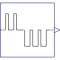

PulseSeriesSeries of pulses |

|
Information
This information is part of the Modelica Standard Library maintained by the Modelica Association.
Starting at time = startTime, first a series of n1 pulses of amplitude1 with length T1 and pause after each pulse Tp1 is issued.
Then, after a pause Tp, a series of n2 pulses of amplitude2 with length T2 and pause after each pulse Tp2 is issued.
Parameters (11)
| offset |
Value: 0 Type: Real Description: Offset of output signal y |
|---|---|
| startTime |
Value: 0 Type: Time (s) Description: Output y = offset for time < startTime |
| amplitude1 |
Value: 1 Type: Real Description: Amplitude of 1st pulse series |
| n1 |
Value: 1 Type: Integer Description: Number of pulses of 1st series |
| T1 |
Value: Type: Time (s) Description: Length of pulses of 1st series |
| Tp1 |
Value: Type: Time (s) Description: Pause between pulses of 1st series |
| amplitude2 |
Value: -amplitude1 Type: Real Description: Amplitude of 2nd pulse series |
| n2 |
Value: 1 Type: Integer Description: Number of pulses of 2nd series |
| T2 |
Value: T1 Type: Time (s) Description: Length of pulses of 2nd series |
| Tp2 |
Value: Tp1 Type: Time (s) Description: Pause between pulses of 1st series |
| Tp |
Value: Type: Time (s) Description: Pause between the two series |
Connectors (1)
| y |
Type: RealOutput Description: Connector of Real output signal |
|---|
Used in Examples (2)
|
Modelica.Electrical.Batteries.Examples Discharge and charge idealized battery |
|
|
Modelica.Electrical.Batteries.Examples Discharge and charge idealized supercap |